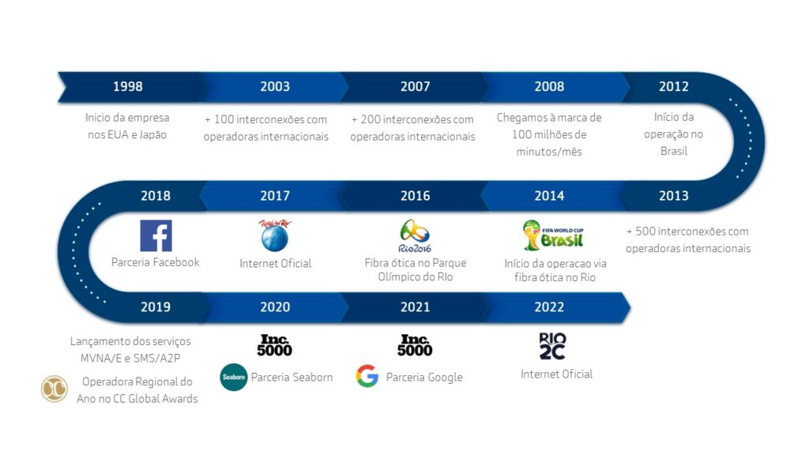
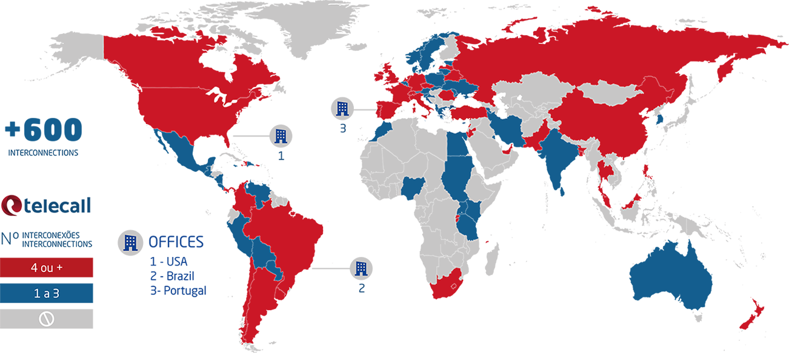

Nossa História
Telecall é uma operadora regulada pela ANATEL (Licenças SCM, STFC e SMP), proprietária de uma rede de fibra de alta capacidade, oferecendo a seus clientes o mais alto padrão de qualidade, velocidade e acessibilidade em soluções telefônicas e de internet. Serviços que incluem uma ampla gama de valores agregados, oferecendo aos clientes operações mais produtivas, dinâmicas e eficazes. Com a aquisição da licença SMP, a Telecall agora também opera serviços móveis (voz e dados), oferecendo aos clientes corporativos uma variedade de planos e comodidades de valor agregado. Além disso, Telecall opera como uma MVNE e MVNA, oferecendo seus sistemas e redes para outras empresas que estão interessadas em lançar suas próprias operações móveis para alavancar suas marcas. Com experiência acumulada de mais de 20 anos e a busca constante por inovação e tecnologia, a Telecall é hoje referência no segmento de telecomunicações e sinônimo de qualidade e eficiência. A Telecall foi fundada em 1998 e está sediada no Brasil, com escritórios em Miami, Portugal e Inglaterra.
Prêmios
Eleito Melhor Operador Regional do Ano na Premiação CC – Global Awards 2019 em Berlim Destaque em Infraestrutura e Soluções de Conectividade e Comunicação Unificada na Premiação da Aberimest em 2018, entregue pelo ministro de telecomunicações Gilberto Kassab e Juarez Quadros, presidente da Anatel. Destaque como Operadora em Inovações Móveis e pelas Soluções de Convergência Fixo-Móvel, Split Billing, Integração e Colaboração Empresarial da Aberimest em 2019. Duas vezes vencedor do Prêmio de Voip Hospedado entregue pela Revista Internet Telephony em 2018 pelo produto Callphone de Comunicação Unificada e Colaboração. #2517 no ranking Inc. 5000 das empresas privadas de maior crescimento acelerado nos EUA de 2020.
Linha do tempo
+ 20 anos de experiência global em soluções de comunicação
Ser Telecall
Ser Telecall é a busca constante do aperfeiçoamento, é ver o futuro como meta presente e ser um time com competitividade e produtividade no sangue.
Interconexões
Com início em 1998 oferecendo serviços de voz no Japão, a divisão internacional Telecall Wholesale foi criada com o objetivo de apoiar o setor de varejo da empresa. Desde seu lançamento, a Telecall Wholesale sempre teve muita pressão interna para oferecer serviços de alta qualidade com tarifas competitivas em um mercado extremamente competitivo. Com essa filosofia, a Telecall focou no mercado internacional e alcançou uma cobertura global com parceiros estratégicos, obtendo hoje, mais de 600 interconexões com algumas das maiores operadoras do mundo.
Com uma enorme capacidade de lidar com diferentes mercados e culturas, a Telecall Wholesale pôde apoiar e adaptar-se quando a empresa lançou em 2005, um produto de varejo nos EUA, um dos mercados mais competitivos do mundo.
Outro desafio veio em 2010, quando a Telecall decidiu construir sua própria rede de fibra óptica na cidade do Rio de Janeiro, no Brasil, e começou a oferecer serviços empresariais de voz e dados.
Em um curto espaço de tempo a Telecall vem ganhando respeito nacional e internacional, e fez história ao participar com muito sucesso nos Jogos Olímpicos de 2014 no Brasil e do Rock in Rio em 2017.
Após quase 20 anos de sucesso e crescimento exponencial, a Telecall Wholesale é conhecida hoje como uma Global Carrier, com sólidas relações comerciais, capaz de se adaptar e lidar com os constantes desafios e mudanças do mundo dos negócios.
